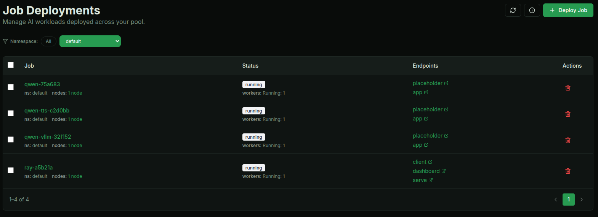
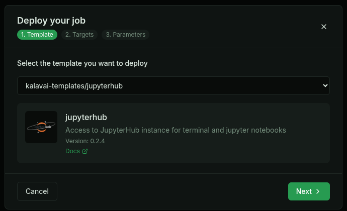

LOCO 2026
This page contains the details for the Kalavai workshop at the 2nd International Workshop on Low Carbon Computing (LOCO'26).
Circular AI Infrastructure: Repurposing Existing Compute for Scalable Workloads
Using the Kalavai platform, the session will demonstrate how existing resources can be repurposed to support modern AI workloads, including large language models and custom research pipelines. Attendees will gain practical insight into deploying and managing distributed compute across heterogeneous environments, while extending hardware lifetimes and reducing both cost and environmental impact. The tutorial is particularly relevant for researchers and practitioners seeking scalable AI solutions within constrained or sustainability-focused settings.
Workshop agenda:
Slide deck available here.
- Case studies
- distributed computing with Ray cluster
- multi-node self hosting of LLMs
- Increasing computing resources
- Setting up the environment
- Connect to a Kalavai pool
- Self-hosted OpenAI-like service (gateway api, access control, monitoring, auto-deployment)
- Create users for deployer
[PREP] Setting up the pool
This section is for setting up the pool that will be used during the workshop. In the interest of time, the actual workshop will use a pre-configured pool; these instructions are left here so future users can follow along within their own infrastructure.
On both seed and worker nodes
Requirements:
- OS: Linux (or WSL in Windows)
- Python: 3.12+
- Docker for your OS
-
Docker compose for your OS
-
Install pre-requisites:
# Python dev libraries (assumed Ubuntu-based linux OS)
sudo apt install python3-dev
# Docker for your system: https://docs.docker.com/engine/install/
- Install Kalavai
python3 -m venv kalavai
source kalavai/bin/activate
pip install kalavai-client
On the seed node
- Start the pool
kalavai pool start --non-interactive
- Generate a joining token for worker nodes
kalavai pool token --admin
On the worker nodes
NOTE: For a fully functional pool, worker and seed nodes must be within the same network to be able to communicate with each other. This can be a local network, or a remote VPN.
- Join the public pool using the token generated in the seed node:
kalavai pool join <token> --non-interactive
Wait for the handshake with the server and the containers to boot up.
- Test that the node has joined successfully:
kalavai node list
The above command should show <your hostname>-<random_string> as a node in the pool.
┏━━━━━━━━━━━━━━━━━━━━━━━━━━━━━━━┳━━━━━━━━━━━━━━━━━┳━━━━━━━━━━━━━━━┳━━━━━━━━━━━━━━┳━━━━━━━┳━━━━━━━━━━━━━━━┓
┃ Node name ┃ Memory Pressure ┃ Disk pressure ┃ PID pressure ┃ Ready ┃ Unschedulable ┃
┡━━━━━━━━━━━━━━━━━━━━━━━━━━━━━━━╇━━━━━━━━━━━━━━━━━╇━━━━━━━━━━━━━━━╇━━━━━━━━━━━━━━╇━━━━━━━╇━━━━━━━━━━━━━━━┩
│ carlosfm-hp-omnibook-7e492d9d │ False │ False │ False │ True │ False │
│ loco2026-serve-a80616a0 │ False │ False │ False │ True │ False │
└───────────────────────────────┴─────────────────┴───────────────┴──────────────┴───────┴───────────────┘
Access your pool from any node
You can access and use your pool from any of the nodes (seed and worker). Both CLI and GUI access are supported. The GUI access is recommended. Start it with:
kalavai gui start
# It will show the address of the GUI as well as the token to use to gain access
The GUI is accessible via the browser, by default on address http://localhost:49153
Part 1: using the pool
Multi-modal LLM deployment
To deploy a model on a single node, there are two available templates, based on your hardware, in the Job page:
- For CPU-only: llama.cpp
- For GPU (NVIDIA and AMD): vLLM
In this tutorial we'll deploy a CPU-based model using llama.cpp template, and a GPU-based model using vLLM. Once you deploy models, the relevant endpoints will be displayed in the Jobs page.

Text model with llama.cpp
In your Kalavai Pool GUI, go to Jobs and create a new job. Select llama.cpp as the template and configure the resources you need. Configure the following advanced parameters:
hfToken: Your Hugging Face token to access private models and uncapped downloads.llamacpp.repoId: unsloth/Qwen3.5-0.8B-GGUFllamacpp.quant: q4_k_m
Once the deployment is completed, use the displayed endpoint in your code for inference. Here is a reference example of text inference.
Text model with vLLM
In your Kalavai Pool GUI, go to Jobs and create a new job. Select vLLM as the template and configure the resources you need. Configure the following advanced parameters:
hfToken: Your Hugging Face token to access private models and uncapped downloads.modelId: Qwen/Qwen3.5-0.8B
Once the deployment is completed, use the displayed endpoint in your code for inference. Here is a reference example of text inference.
Text-to-speech model with vLLM
In your Kalavai Pool GUI, go to Jobs and create a new job. Select vLLM as the template and configure the resources you need. Configure the following advanced parameters:
hfToken: Your Hugging Face token to access private models and uncapped downloads.modelId: Qwen/Qwen3-TTS-12Hz-0.6B-CustomVoicevllm.extra:--omni --enforce-eager --trust-remote-code --max-model-len 4000
Once the deployment is completed, use the displayed endpoint in your code snippet for inference. Here is an example of how to do TTS.
Distributed computing
Ray is a distributed framework for scaling Python and ML workloads. Kalavai’s managed Ray clusters let you launch distributed training or inference tasks without setting up or managing nodes.
To deploy: In your Kalavai Pool GUI, go to Jobs and create a new job. Select Ray Cluster as the template and configure the resources you need. The main default values are:
ray.minNvidiaWorkers: Used for autoscaling workers. Minimum NVIDIA GPU workers to always have running (can be 0). 1 worker == 1 GPUray.maxNvidiaWorkers: Used for autoscaling workers. Maximum NVIDIA GPU workers to scale up to when needed.deployment.cpus: CPU cores per worker node.deployment.memory: RAM memory (GB) per worker node.deployment.gpuMemory: GPU vRAM memory (GB) per worker node.
Once the deployment is completed, you'll have a series of endpoints to use and manage the Ray Cluster:
client: programming endpoint to submit Ray jobs to.dashboard: GUI endpoint to see the Ray cluster dashboard in the browser.
See here an example of how to deploy a fine tuning job on your Ray cluster.
Interactive AI workloads
JupyterHub is a multi-user server for Jupyter notebooks. It allows multiple users to access Jupyter notebooks in a shared environment. It's great for AI development and an easy way to interact with GPU-based machines without the complexity of SSH connections.
To deploy: In your Kalavai Pool GUI, go to Jobs and create a new job. Select JupyterHub as the template and configure the GPU resources you need. The default values are:
# credentials to access JupyterHub instance
username: user
password: password

More info here.
Part 2: Create the first LOCO community computing pool
Note: the seed pool and all the worker nodes will only be available during the workshop!
Now that we know what Kalavai pools are and what we can do with them, let's attempt to pull all participant resources together in a single pool.
First, make sure you have configured and installed all pre-requisites and make sure you have installed the kalavai-client with version >= 0.10.6.
Then you should be ready to join the pool with just one command:
kalavai pool join eyJjbHVzdGVyX2lwIjogIjEwMC45Ny4xMTEuMSIsICJjbHVzdGVyX25hbWUiOiAia2FsYXZhaV9jbHVzdGVyIiwgImNsdXN0ZXJfdG9rZW4iOiAiSzEwZDE0OWIwZTY1MTEwYTM5N2M0YjI4Mzc3MGFlMDljMmNhNzA4NGEwNDdmZTEzNzdmMzdiNjBmM2EwYWZlYTU0Yjo6c2VydmVyOmFjZmZhNTk2YmY4NTNkZjZhODFiY2I1OTgzMmU0OTY3XG4iLCAid2F0Y2hlcl9hZG1pbl9rZXkiOiAiZGFhYWRiMDUtZDBlNS00MDEzLTliOTItMDExN2VkNGYxNjQyIiwgIndhdGNoZXJfc2VydmljZSI6ICIxMDAuOTcuMTExLjE6MzAwMDEiLCAicHVibGljX2xvY2F0aW9uIjogImV5SnpaWEoyWlhJaU9pSmhjR2t1ZG5CdUxtdGhiR0YyWVdrdWJtVjBJaXdpZG1Gc2RXVWlPaUpRTlU5RU4wOU9TRFV5VlU1WE5FZElORmMxVWxWTVZFNVZSbE5GTWpOV1R5SjkifQ== --non-interactive
If all has gone well, you can display the list of nodes in the pool, which should include your machine.
kalavai node list
The above command should show <your hostname>-<random_string> as a node in the pool.
┏━━━━━━━━━━━━━━━━━━━━━━━━━━━━━━━┳━━━━━━━━━━━━━━━━━┳━━━━━━━━━━━━━━━┳━━━━━━━━━━━━━━┳━━━━━━━┳━━━━━━━━━━━━━━━┓
┃ Node name ┃ Memory Pressure ┃ Disk pressure ┃ PID pressure ┃ Ready ┃ Unschedulable ┃
┡━━━━━━━━━━━━━━━━━━━━━━━━━━━━━━━╇━━━━━━━━━━━━━━━━━╇━━━━━━━━━━━━━━━╇━━━━━━━━━━━━━━╇━━━━━━━╇━━━━━━━━━━━━━━━┩
│ carlosfm-hp-omnibook-7e492d9d │ False │ False │ False │ True │ False │
│ loco2026-serve-a80616a0 │ False │ False │ False │ True │ False │
└───────────────────────────────┴─────────────────┴───────────────┴──────────────┴───────┴───────────────┘
Once you join, you can manage the pool via the browser GUI:
kalavai gui start
# It will show the address of the GUI as well as the token to use to gain access
The GUI is accessible via the browser, by default on address http://localhost:49153
Now we should be ready to deploy a large mode across all of our computers! (live only)
Clean up
Once you are done, you can remove your worker machine from the pool as follows:
kalavai pool stop
This will disconnect you from the public pool and remove all running containers.